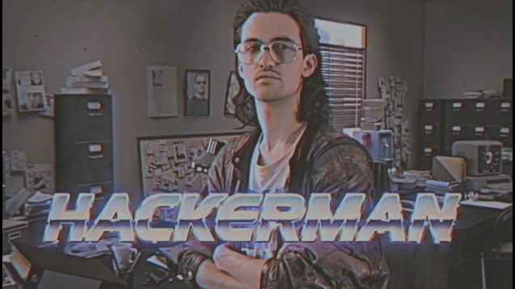
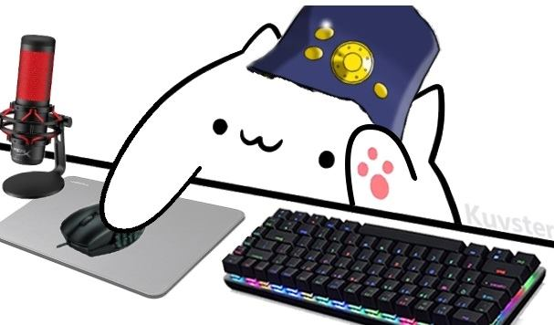

Aca tenemos al estudiante de 4 geeks, quien estudia muchas horas a la semana para poder ser alguien digno en el mundo IT, egresado de ing. quimica como uno de los mejores busc ahora poder dominar el arte de la tecnologia, su rostro nadie lo sabe, pero algunos dicen que es un gato con sombrero de boogiepop, del anime Boogiepop wa warawanain(buen anime por cierto)

Boogiepop.dev

el mejor hacker del mundo